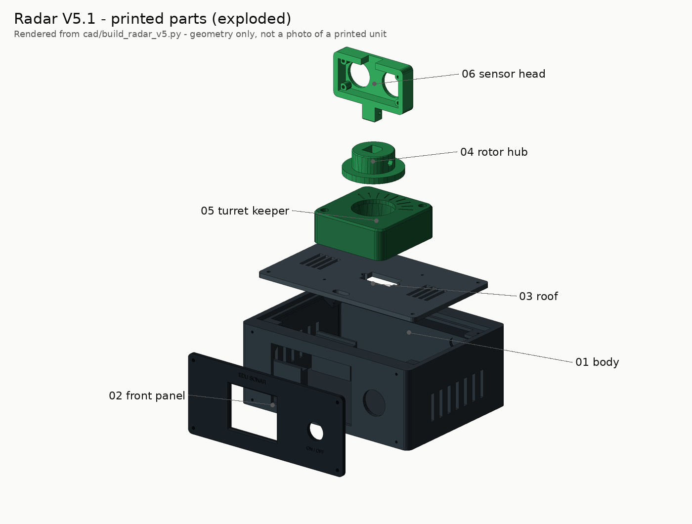
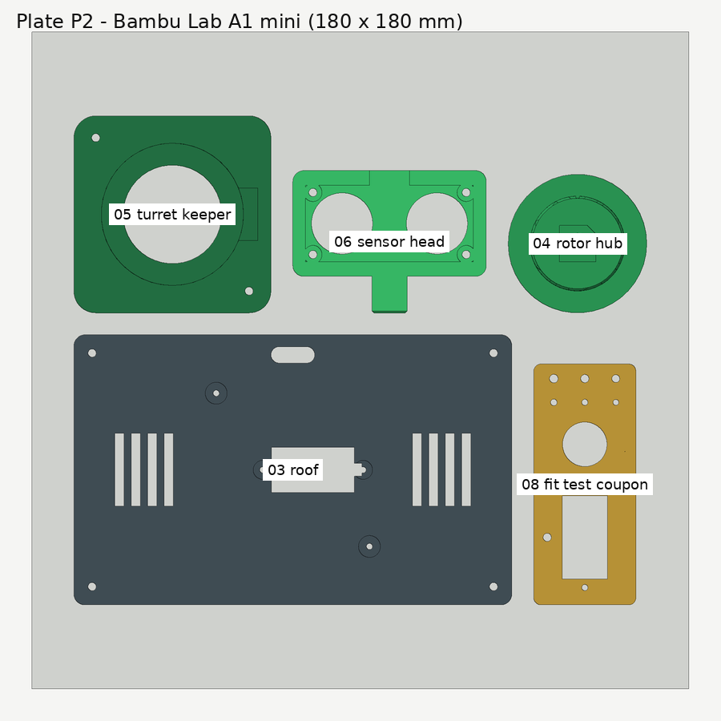
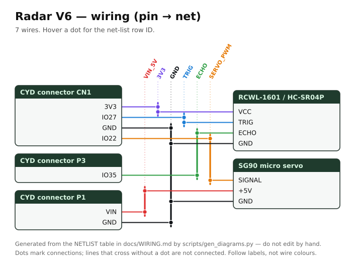
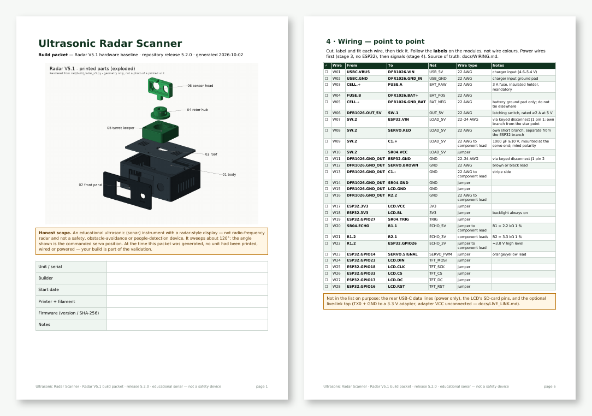
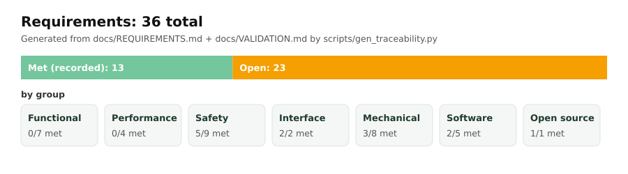
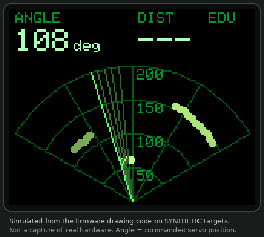
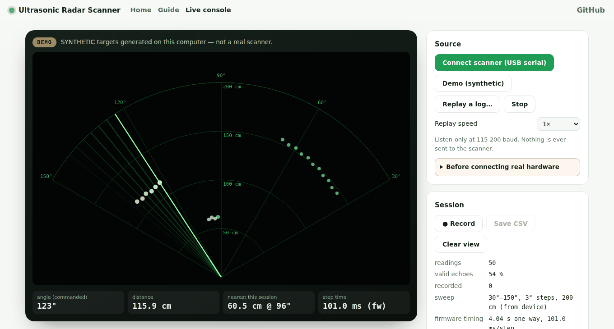
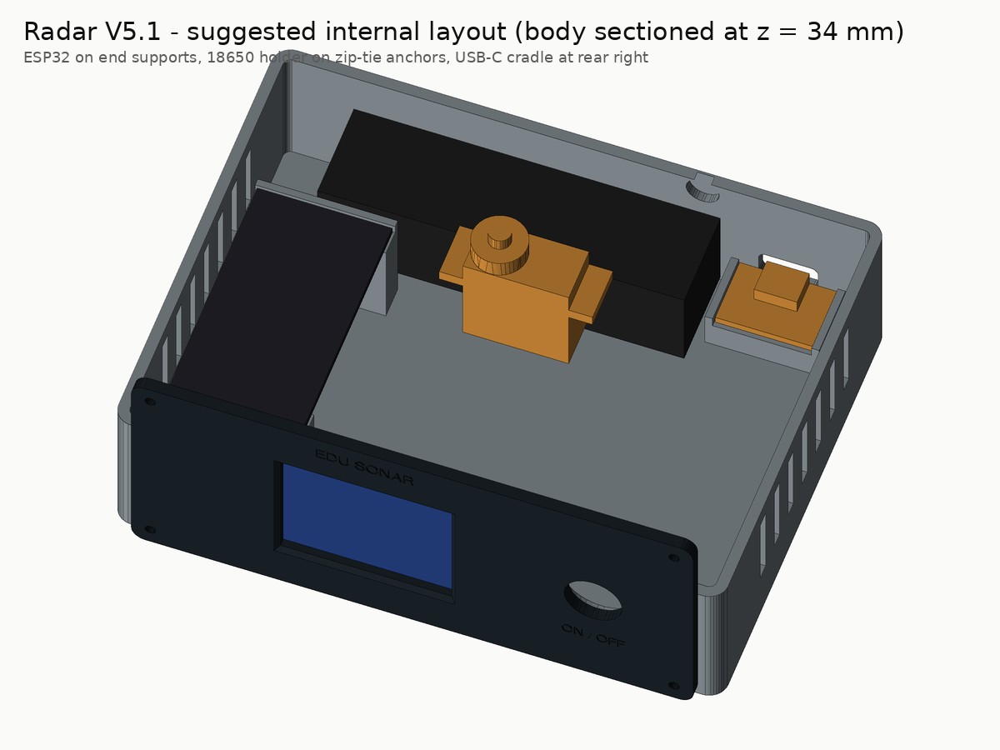
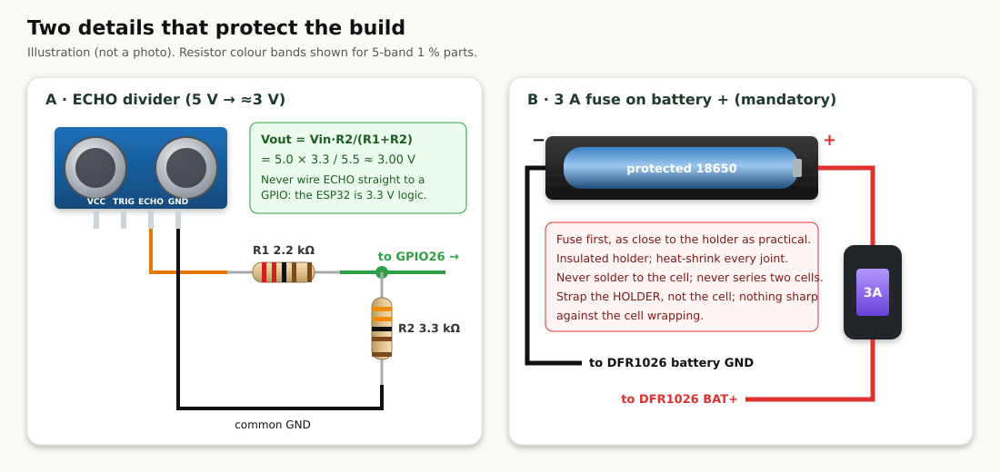

Ultrasonic Radar Scanner
A battery-powered desktop instrument that sweeps an ultrasonic sensor on a servo and draws what it hears as a green radar-style picture. Open hardware: 3D files, parts list, pin-by-pin wiring, firmware, a printable build packet, and web and desktop apps.


 |
 |
| The firmware's drawing code on synthetic targets (simulated, not a photo). | Six printed parts, rendered from the CadQuery source. |
Important. Educational sonar with a radar-style display. Not radio-frequency radar, and not a safety or obstacle-avoidance device. It sweeps about 120°, and the angle shown is the commanded servo position. The CAD, firmware and apps pass automated checks, but no unit has been printed, wired or powered yet.
docs/VALIDATION.mdtracks what is proven.
Everything you need to make one
 3D files 3MF plates · STL · STEP · CadQuery source |
 Parts list 27 items · bom.csv |
 Wiring, pin by pin 46 pins · 28 wires · wire_list.csv |
 Build packet (PDF) print it · tick every step |
 Requirements 36 · traced to tests |
 Firmware Arduino · ESP32 · flash from the browser |
 Web + desktop app guide · simulator · live console |
 Manufacturing kit one ZIP per release |
Build it in five gated stages

- Fit coupon: print
plate_S1_fit_coupon.3mfand tune the hole sizes (Printing). - Servo fit: print
plate_S2_servo_fit_subset.3mf, then fit the servo, hub and keeper (Assembly). - Bench power: wire the charger, fuse, cell and switch only (wires W01–W06), and check the voltages.
- Flash and bench run: flash the firmware (Flash page or Arduino), wire the signals, and check the sweep.
- Full print: print plates P1 and P2, assemble, and record the tests in the build packet.
Safety first
- The 3 A fuse on the battery positive lead is mandatory.
- Never connect a bare cell to the ESP32 VIN or the servo. Use a protected 18650 and never solder to the cell.
- The HC-SR04 ECHO pin is 5 V. It goes to GPIO26 only through the 2.2 kΩ / 3.3 kΩ divider.
- Never plug the ESP32's own USB in while the battery harness is connected. Unplug the harness to program it.
- Don't charge unattended while you're prototyping.

What's inside
| Part | Wired to | |
|---|---|---|
| 🧠 | ESP32-WROOM-32 DevKit (30-pin) | the hub of everything |
| 🔊 | HC-SR04 ultrasonic sensor | TRIG → GPIO27 · ECHO → divider → GPIO26 |
| ⚙️ | SG90 positional servo | signal → GPIO14 · power from the switched 5 V rail |
| 🖥️ | 1.8" ST7735S LCD, 160 × 128 | DIN 23 · CLK 18 · CS 33 · DC 17 · RST 16 |
| 🔋 | Protected 18650 → 3 A fuse → DFR1026 charger/boost → latching switch | USB-C charges it (5 V only) |
| 🖨️ | 6 PLA parts with M2 screws only | Bambu Lab A1 mini plates, no supports |
Warning. Open power issue: the DFR1026 charger module may need its on-board button to turn back on after the switch goes OFF → ON. The test for it and two documented fall-backs are in
docs/WIRING.md.
How it works
| Equation | With the defaults | |
|---|---|---|
| Distance | $d = v t / 2$, $v ≈ 331.3 + 0.606\,T$ | 5 823 µs at 20 °C → 100 cm |
| ECHO divider | $V_{out} = V_{in} R_2 / (R_1 + R_2)$ | 5.0 V → 3.0 V |
| Servo | 50 Hz frame, 1.0–2.0 ms pulse, 16-bit duty | 90° → 1500 µs → 4915 |
| Sweep | $T = N_{moves}(t_{settle} + t_{overhead})$ | 40 × ~101 ms ≈ 4.0 s (estimate) |
Intuition, worked examples and plots are in docs/EQUATIONS.md. Every number is re-checked by a test.
Use it
- Web app: normansrule.github.io/ultrasonic-radar-scanner. It has the build guide, simulator, wiring explorer, live console and firmware flasher, and can be installed as an app.
- Desktop app: download it from Releases (Windows, macOS or Linux). It works fully offline.
- Live console: watch the real sweep over a two-wire, listen-only serial tap, replay logs and record sessions (
docs/LIVE_LINK.md).
Publish, rebuild, contribute
- Put it on GitHub from a fresh Ubuntu terminal:
docs/PUBLISH.md. This is one paste, and it also creates the web app and the release. - Regenerate everything: run
python scripts/render_cad.py,render_previews.py,gen_diagrams.py,export_mfg.py,make_build_packet.py,gen_traceability.pyandbuild_site.py, thenpython -m pytest tests. - Built one? Fill in the build packet's test sheet and send the results as a pull request to
docs/VALIDATION.md.
Repository layout
cad/build_radar_v5.py CadQuery source (model of record); every dimension is a named variable
cad/3mf cad/stl cad/step generated print files and editable CAD (never edit by hand)
firmware/Radar_V5/ Radar_V5.ino + sketch.yaml (pinned ESP32 core and libraries)
manufacturing/ bom.csv, printed_parts.csv, wiring_pins.csv, wire_list.csv, build_packet.pdf
docs/ REQUIREMENTS, BOM, WIRING, PRINTING, ASSEMBLY, EQUATIONS, LIVE_LINK,
VALIDATION, SECURITY, PUBLISH, GLOSSARY
hardware/diagrams/ generated wiring, callouts, renders, plates, GIF
site/ web app (GitHub Pages): landing, live console, flasher, guide
app/ desktop app (Electron)
scripts/ every generator, packager and exporter
tests/ pytest, Node and browser checks
sbom/ CycloneDX toolchain bill of materials
MIT licence · datasheets and credits in CREDITS.md · supply chain and electrical safety in docs/SECURITY.md · terms in docs/GLOSSARY.md
Source: README.md — generated by scripts/build_site.py